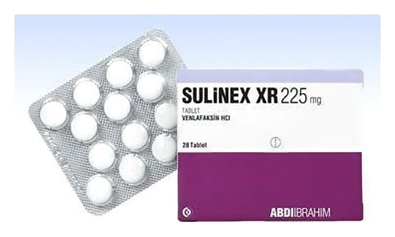

Sulinex XR 225 mg Uzatılmış Salımlı Tablet, 28 Adet

Ne için kullanılır
KT · Bölüm 1• SULİNEX XR venlafaksin etkin maddesini içerir. • Uzatılmış salımlı tablet formundadır. Serotonin ve noradrenalin geri alım inhibitörleri (SNRI’lar) olarak isimlendirilen ilaç grubuna ait bir antidepresandır. • Kutuda 14 ve 28 tablet içeren blister ambalajlardadır. • Yuvarlak, bikonveks, beyaz tabletlerdir. • Majör depresyonun tedavisinde, majör depresyonun nüksünün ve yeni episodların (atakların) engellenmesinde, yaygın anksiyete (kaygı) bozukluğu (YAB) tedavisinde, sosyal fobi (sosyal kaygı bozukluğu) tedavisinde, agorafobi (hastanın panik atağının ortaya çıkabileceğini hissettiği yerlerde bulunmaktan korkması) ile birlikte veya agorafobi olmaksızın görülen panik bozukluğu tedavisinde kullanılır.